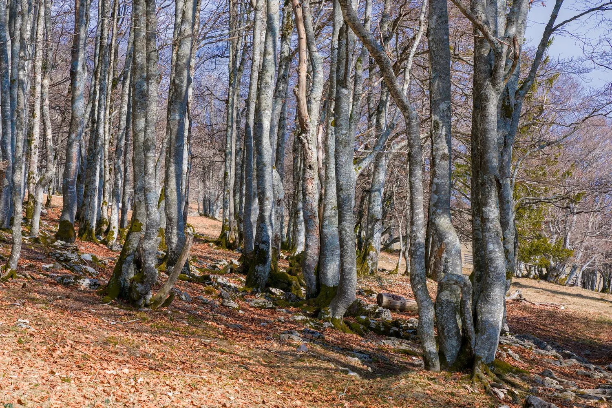

La Fageda d'en Jordà
Un hayedo excepcional que crece sobre una antigua colada de lava fría, dentro del Parc Natural de la Zona Volcànica de la Garrotxa. La ruta Joan Maragall es corta, llana y de apenas 1,5 km, perfecta para que los más pequeños caminen sin cansarse. Un paseo tranquilo entre árboles centenarios, ideal como primer contacto de la familia con el paisaje volcánico de la Garrotxa.
Carretera d'Olot a Santa Pau, km 4,5, 17811 Santa Pau (Girona) Visitar web oficial